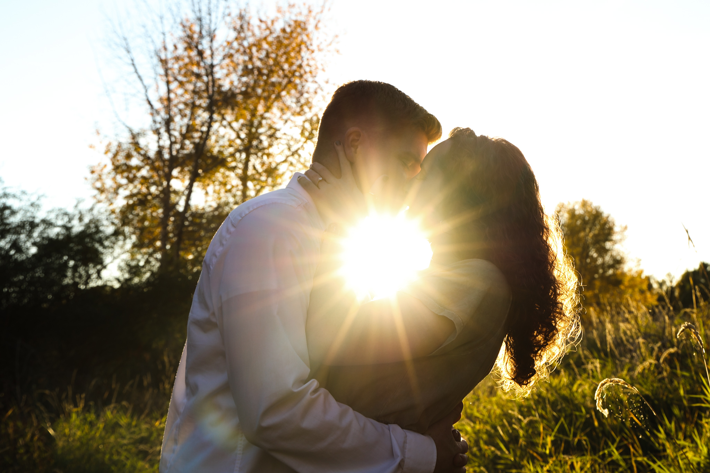

Site Name
Shoot Rogue Photography, Capturing Your Vision
Site Purpose
Do you believe that the right pictures help elevate the ambiance of a
home or business? Do you have time to sort through hundreds if not
thousands of pictures to find the right pictures for your home or
business? If you could hire a photographer to go take the pictures
that you wanted for a fare, price, would you be interested? My website
will show examples of what you could get for your home or business. So
many people sell pictures. How many people sell you the pictures you
want? Get what you want with my website.
Target Audience and Scenarios
My target audience will be businesses and interior decorators. I want to provide a service for business owners and decorators who want to set a mood using pictures in their homes and offices.
Logo
Color Scheme
I want greys and steel grey blues, I am testing these colors but i'm not sure if they'll stay #cfd9e4 and #282828
Typography
font-family: 'Bebas Neue', cursive; font-family: 'Rubik', sans-serif;
Wireframe Sketches
Site Map
Why / What We Offer / How it Works
On this site, customers will see amazing pictures that inspire. They
will be able to view a few different examples of offices that have
incorporated the artwork in their offices to set a mood and help
people feel more comfortable. Too many people get complacent in their
boring spaces. Too many people get stuck and do not know how to
change. Photography allows the viewer to feel. It can help uplift and
inspire. Let my pictures help you. We are alive. We are here to
experience more than the boring walls of or homes and offices.
Experience the scenes and faces of the world.
We offer location specific photography sessions. Choose your theme. Do
you want landscape, portrait, people, cityscape, wildlife or object?
Do you want seasonal themes? We will get you what you want.
How it works is, we will sit down and come up with a plan. You will
tell me what you want and I will tell you how I will do it. If you are
unsure, I will show you examples of my work and try to get a plan.